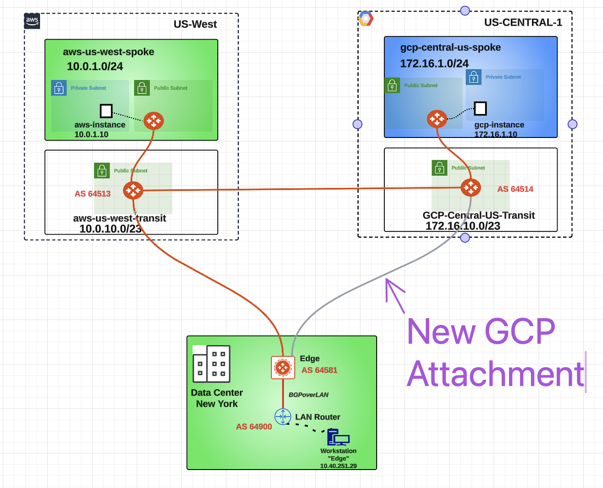

Lab SECURE HIGH-PERFORMANCE DATACENTER EDGE#
This lab will demonstrate how securely connect on-prem and Colo locations to CSP.
1. General Objectives#
You are asked to interconnect the on-prem DC in New York to your MCNA. An Aviatrix Edge device has already been provisioned and it got already registered to the existing Aviatrix Controller.
Aviatrix Secure High-Performance Datacenter Edge solution gives power back to the network administrators to deliver cloud connectivity without compromise. The solution delivers encrypted, line-rate performance with single region, multi region, or multi cloud redundancy options and full visibility and troubleshooting capabilities end to end.
2. Initial set-up#
Here is a view of the initial topology:

Fig. 1 Initial Topology#
All applications in AWS and GCP have only Private IP’s
These are the CIDR blocks per each CSP:
AWS = 10.0.1.0/24
GCP = 172.16.1.0/24
The AWS instance and GCP instance are running several services on the following ports: 1433, 1521, 443, 5000, and 50100.
During the initial setup, MCNA was deployed. Both AWS and GCP environments are connected using the Aviatrix backbone.
3. Gatus Dashboards#
All of the pre-deployed instances are running Gatus and attempting to connect to each other on various ports. There are two gatus dashboard(s), deployed to aws-gatus https://aws.pod#.aviatrixlab.com/ and gcp-gatus, https://gcp.pod#.aviatrixlab.com/ visualize this connectivity continuously and in real-time. Green means a tcp connection was successful and red means it was unsuccessful.
Note
Above on url replace the pod#, with your assigned pod# e.g for pod97 aws-gatus will become https://aws.pod97.aviatrixlab.com/
With pre-deployment and initial setup below is the gatus initial sample look
Note that the AWS/GCP and Edge connectivity sections are all red. These networks are not connected.
While AWS and GCP connectivity section are all Green. As These networks are already connected.
4. Edge Connectivity#
Edge gateway is already deployed as shown in below topology.

4.1. Attachment between Edge and the AWS Transit#
Let’s establish a peering between the Aviatrix Edge device and the AWS Transit Gateway in US-WEST-2.
In the topology shown below, there is a workstation named “Workstation Edge” connected to the LAN router. Once this connection is made, indicated by the grey links, initiate a ping from the workstation to verify connectivity. In the topology shown above, there is a workstation named “Workstation Edge” connected to the LAN router. Once this connection is made, indicated by the grey links, initiate a ping from the workstation to verify connectivity.

Now it’s time to establish Edge Gateway to AWS Cloud attachment!
Go to CoPilot > Cloud Fabric > Hybrid Cloud > Edge Gateways and click on the "Manage Gateway Attachment" button, on the right-hand side of the screen.

Click on the "+Attachment" button.

Fill in the attachment template using the following settings:
Transit Gateway: aws-us-west-transit
Local Edge Gateway Interfaces: WAN(etho)
Attach over: Public Network
Do not forget to click on Save.

Wait a few seconds for the Aviatrix Controller to establish the attachment. You will then see a confirmation message like below, indicating that the operation has been successfully completed.

Let’s verify the presence of the attachment previously created on the Topology.
Go to CoPilot > Cloud Fabric > Topology > Overview (default).

4.2. Attachment between Edge and the Local Lan Router#
Now it’s time to establish Edge Gateway to Local Lan Network
Go to CoPilot > Networking > Connectivity > External Connections(S2C) and click on the "+External Connection To" and select "External Device"
Fill in the External Connectivity template using the following settings:
Name: Edge-Onprem-Lan
Connect Using: BGP
Type: LAN
Local Gateway: avx-equinix-edge-1
Remote ASN: 64900
Remote LAN IP: 10.40.251.1
Local LAN IP: 10.40.251.2
Do not forget to click on Save. Wait a few seconds for the Aviatrix Controller to establish the attachment. Let’s verify the presence of the LAN attachment previously created on the Topology.
Go to CoPilot > Cloud Fabric > Topology > Overview (default).

The On-Prem Edge device is now connected to both the local LAN and the cloud. By default, the Edge device advertises all cloud routes to the LAN router and all LAN routes learned from the LAN router to the cloud. This configuration establishes a path from on-premises to both AWS and GCP. Connectivity is confirmed on both the GCP and AWS gatus dashboards

This is how the Topology would look like after the creation of the attachment.

The Edge device allows to extend all the Aviatrix functionalities to the remote DC!
4.3. Attachment between Edge and the GCP Transit#
The Aviatrix Edge device is capable to be connected to multiple Transit Gateway.
Let’s establish a peering between the Aviatrix Edge device and the GCP Transit Gateway in us-central-1.

Go to CoPilot > Cloud Fabric > Hybrid Cloud > Edge Gateways and click on the "Manage Gateway Attachment" button, on the right-hand side of the screen.
Click on the "+Attachment" button.
Fill in the attachment template using the following settings:
Transit Gateway: gcp-central-us-transit
Local Edge Gateway Interfaces: WAN(etho)
Attach over: Public Network
Do not forget to click on Save.
Wait a few seconds for the Aviatrix Controller to establish the attachment. You will then see a confirmation message like below, indicating that the operation has been successfully completed.

Let’s verify the presence of the attachment created on the Topology.
Go to CoPilot > Cloud Fabric > Topology > Overview (default).
5. Edge as DCF#
The rapid adoption of cloud services has transformed how organizations operate, offering scalability, flexibility, and reduced costs. However, it also introduces new security challenges. Traditional firewalls and security measures struggle to keep up with the dynamic nature of cloud environments. This is where Aviatrix Edge Gateway, functioning as a Distributed Cloud Firewall, makes a significant impact.
Edge Gateway as DCF provide Enhanced Security: Comprehensive protection across multi-cloud and hybrid cloud environments. Simplified Management: Centralized control with a unified security framework. Scalability: Seamless scalability to meet the expanding needs of your cloud infrastructure. Operational Efficiency: Reduced complexity leading to improved agility and reduced operational overhead.
5.1 Connectivity from on Prem Network Workstation to Cloud .#
Previously, we successfully established connectivity between our On-Prem Network and both AWS and GCP Cloud environments. The topology is as follows:
Let’s launch a connectivity test, from the Workstation “Edge” inside the on-prem network.
You can access the workstation Edge https://edge.pod#.aviatrixlab.com , simply replace the # with your assigned pod number.
and login with username as student.
You will land on the Desktop of the Workstation Edge and from here launch the LX Terminal.

Fig. 2 LX Terminal#
Now execute the curl command towards the private IP address of the aws-instance instance (i.e. 10.0.1.10) and gcp-instance instance (i.e. 172.16.1.10) on following ports 1433, 1521, 5000, 50100 You will get output similar like below.

Also execute curl for https like below

5.2 Implementing DCF rules#
There is a new security requirement stating that on-premises network workstations must not be able to communicate with the cloud over HTTPS or port 1521.
Go to CoPilot > Security > Distributed Cloud Firewall and click on the +Rule button.
Fill in the Create Rule template using the following settings:
Name: On-Prem-to-Cloud-block-1521-443
Source Groups: On-Prem-network
Destination Groups: rfc1918
Protocol: TCP
Ports: 1521, 443
Action: Deny
Make sure to Logging toggle on Do not forget to click on Save in Drafts.

Do not forget to click on Commit.

Execute the previously run curl commands which we confirmed earlier that the applications hosted on the cloud are accessible from the On-Prem network.
Next, execute the same curl commands on ports 1521 and 443, where we have deployed the deny rule in Aviatrix DCF.
Observe that the connections from the On-Prem network to the CSP are now timing out.
Connections to CSP on other applications running on ports 1433, 5000, and 50100 remain accessible as before.
Now We can view the Distributed Cloud Firewall (DCF) Monitoring logs by following these steps:
Navigate to CoPilot > Security > Distributed Cloud Firewall
Go to Monitor tab.
Click on the
ColumnsiconSelect
gatewayto include in the displayed columns.
In the search field, type on-prem to filter all the logs that match the DCF rule name On-Prem-to-Cloud-block-1521-443.
The DCF monitor logs indicate that on-premises to cloud traffic is being blocked in accordance with the DCF rule On-Prem-to-Cloud-block-1521-443. This rule is implemented on the Edge Gateway, which is deployed within the on-premises network.